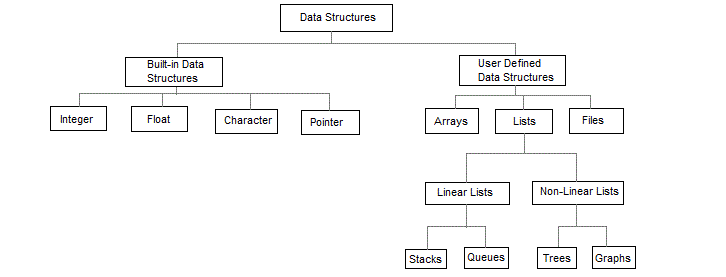
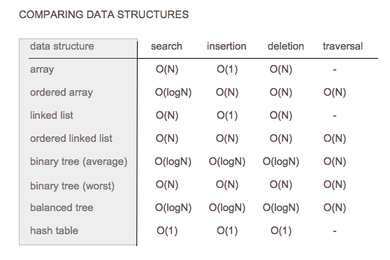
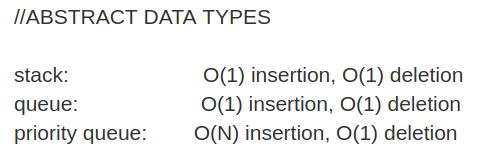
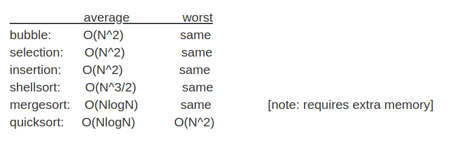

DATA STRUCTURES & ALGORITHMS
Program = Data_Structure(pragramatic way of storing and representing data efficiently) + Algorithms ( playing with those data to provide correct result)
Two main Weapons of program for Solving All problems are :
1) Data Structure : If the data is stored efficiently or if best possible data structure has been selected according to the operation algorithm will be using, it will boost the RunTime(sorting,searching etc.) of Algorithm significantly because data structure has already made storing, retrieving and modifying data as fast as possible.
NOTE: Correct Data Structure will itself solve almost half of the problems which may be encountered while developing algorithm for solving problems.
2) Algorithms: Now after Correct data structure is selected, its time for an alogrithm to laverage those best structured data , take the operation to the next level. Now choosing the correct algorithm will again boost
the runtime of the program.
Example: Consider a Scenerio where your program need to need to search for a integer key in a dynamic database of integers where more integers may be added overtime. What data structure will be the best ?
Options can be :
a) Array :
> If you are storing data in array, and using binary search algorithm, then you have to sort the data again and again everytime database changes and then start searching.
> WorstCase: O(n)
b) Linked List:
> it can aslo be used as it solves large data strorage and dynamic linking problem But Searching is still a problem.
> In case of searching , Worstcase still be: O(n)
c) Binary Search tree:
> If you are using BST data structure for storing dynamic integers then your data is almost already sorted, and then algorithm only have to perform searching which will be much faster .
> WorstCase: logn
So in this way, Deciding on Data Structure is really very efficient when you are not only concern about getting work done but also about speed and efficiency of your programs.
So HOW TO DECIDE BEST DATA STRUCTURE FOR A PARTICULAR PROBLEM ?
>>> In Real World Scenerio, Data-Strutures mentioned in the book will not satisfy Most of your needs, you should be able to tweak it according to your requirements.
1. Complexity: Get Clear with What should be the Runtime Space Complexity and Time Complexity of the Program during Execution.
2. Are you dealing with Static data (which will never grow or grow very slowly) or Dynamic data (which grows faster and needs frequent modification and searching).
3. Based on the above criteria, choosing or creating your own data-structure is need.
---------------------------------------------------------------------------------------------------------------------------------------------------------------------------------------------------------------------------------------------------
First, take a look at what you will be doing with the data items and ask yourself some questions:
---------------------------------------------------------------------------------------------------------------------------------------------------------------------------------------------------------------------------------------------------
do you need random access?
do you perform a lot of insertions? how about deletions?
do you allow duplicates?
are you searching for elements frequently?
does your data need to be ordered?
would you need to traverse the elements?
how big is your data?

1. Array :
☐ Advantages:
◇ It is useful when you know the size you need and the size is small.
◇ If you need fast insertion and unordered elements but rare traversing then array becomes useful.
◇ If you need fast search in an array, use binary search.
◇ It is good for random access
☑ Disadvantages:
☐ The main demerit of array is the size must me allocated before hand which is a huge waste of memory.
☐ If a lot of deletions are needed then array is probably not the best data structure.
☐ Though a system has large free space but those free space might not be contigious so in this case again array will fail to work.
2. Linked List :
1) Advantages :
1- If you are not sure about the size of elements before hand, Linked list is better choice as it takes constant time O(1) for inserting at the end or begining of the list.
2- Insertion can be comparatively faster than array since items are shifted only references are updated.
2) Disadvantages:
1- Deletion is still O(N)
2- Binary Search is not possible because we cannot access element at the middle of the list.
3- Random access is not possible as every other item is accessed starting from the first node.
3. Binary Tree:
1) Advantages:
1- Ordered binary Tree provides faster O(logn) Searching, Insertion and deletion than arrays and linked list which is awesome.
2- However if the tree is unblanced, insertion will become worse than array and linked list.
3- If recursion is used, traversing binary tree in order is also possible.
4- If you are sure that data inserted will be in random order, a regular binary tree might be a sufficient solution.
4. Hash Table:
1) Advantages:
1- Searching and insertion,are super fast O(1) time.
2- Even deletion can be achieved in O(1) time if deleted element is replace with a special flag in such a way that searching and insertion algorithm treats the flag as empty cell.
2) Disadvantages:
1- Traversing the elements are not possible at all.
2- hash tables are even faster than trees but degrade catastrophically when the load factor gets too big as they are based on arrays whose accurate size/number of elements need to known before hand.
>>> If you cannot predict the size of the elements beforehand , it is better to use separate chaining method over open addressing method to implement hash table.
ABASTRACT DATA TYPES In Data Structures are logical data types which advertise their behaviour which is always same in any programming language but they might be implmented in various ways which
is not considered important so it is mostly kept hidden.

> Priority queue is a sorted queue by priority (from greatest to lowest key). Insertion in a priority queue runs in O(N) time, while removal is still in constant time

> Insertion Sort is the best if data is too small (in 3 digits) because it is too implement.
> Shell sort would be better if data is in (4 digits or more)
> It you have a large data set, Complex sorting algorithms like mergesort and quicksort is needed
> Mergesort requires an extra array than quicksort to perform sorting which will not be good if the system has limited memory.
> But Quicksort can perform sorting as fast mergesort and even faster than merge sort in worse case without needing extra memory space.
However if the items are not random, Quicksort sorting degrades to O(n2).